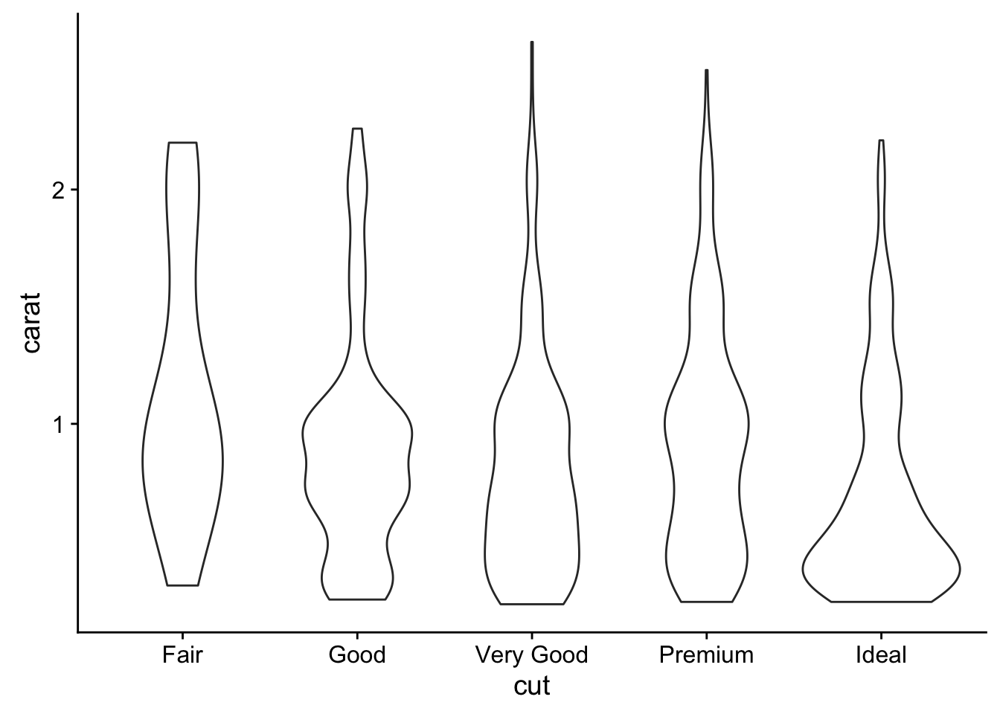
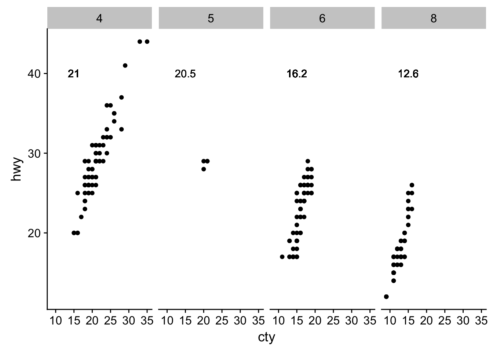
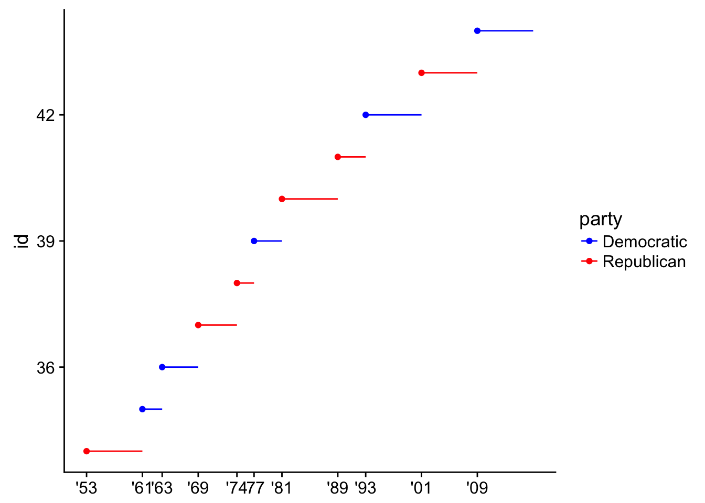
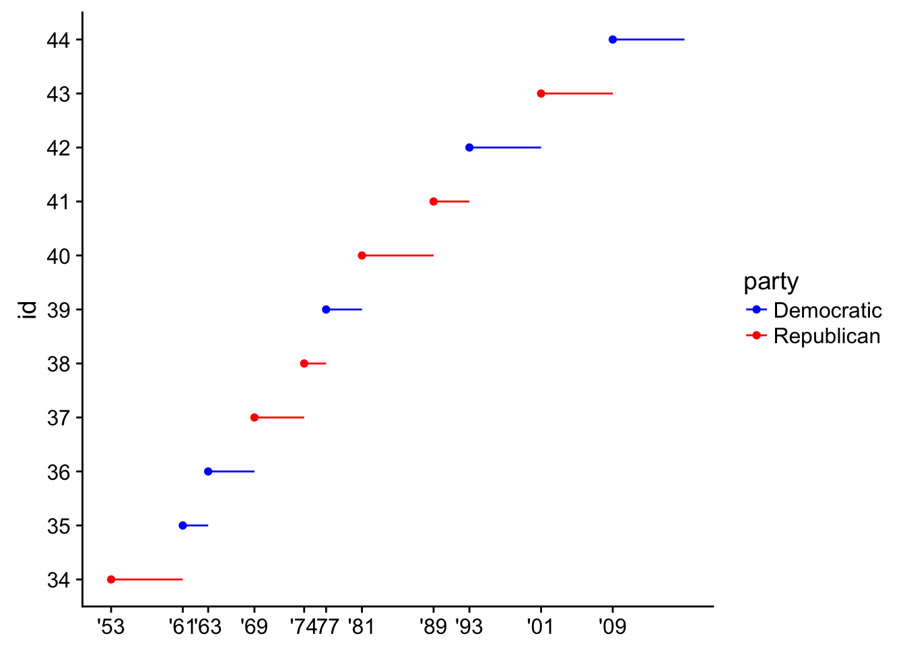
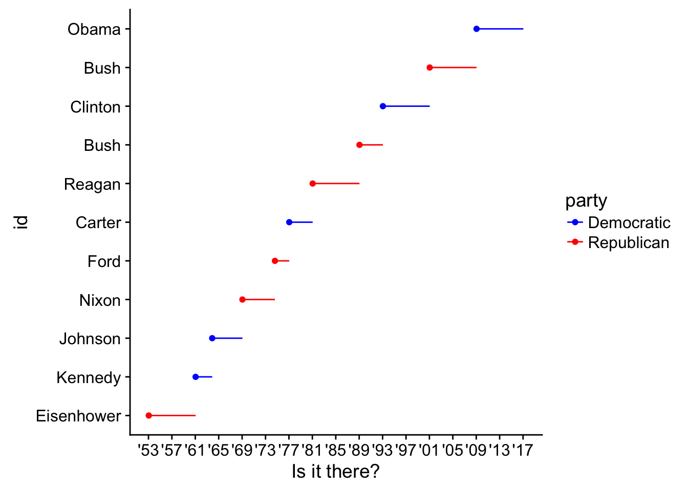

R4DS Exercises
Overview
I’m guiding a group walkthrough of Garrett Grolemund and Hadley Wickam’s great book R for Data Science. We are trying to cover a chapter of material per week and have a one-hour weekly code review to sit together and discuss the Excersises. If you live around Charlottesville and are interested in joining, ping me.
These are the answers to the excercises we have covered so far and will update after our mostly weekly meetings.
3 Intro to ggplot2
3.2 First Steps
library(magrittr) # %<>%
library(tidyverse)- Run ggplot(data = mpg). What do you see?
ggplot(mpg) # grey square
# this is the initialized plotting areaHow many rows are in mpg? How many columns?
dim(mpg)## [1] 234 11What does the drv variable describe? Read the help for ?mpg to find out.
?mpg Make a scatterplot of hwy vs cyl.
ggplot(mpg) +
geom_point(aes(x = hwy, y = cyl)) What happens if you make a scatterplot of class vs drv? Why is the plot not useful?
What happens if you make a scatterplot of class vs drv? Why is the plot not useful?
ggplot(mpg) +
geom_point(aes(x = class, y = drv))# factor vs factor points
# need some sort of density/count viz instead3.3 Aesthetics
- What’s gone wrong with this code? Why are the points not blue?
ggplot(data = mpg) +
geom_point(mapping = aes(x = displ, y = hwy, color = "blue"))
# aes is for mapping columns in mpg by name
# doesn't understand color names inside aes() so uses default color scale
ggplot(data = mpg) +
geom_point(mapping = aes(x = displ, y = hwy), color = "blue")
# just move it outside- Which variables in mpg are categorical? Which variables are continuous? (Hint: type ?mpg to read the documentation for the dataset). How can you see this information when you run mpg?
str(mpg) # chr/fct is categorical, int/num is numeric## Classes 'tbl_df', 'tbl' and 'data.frame': 234 obs. of 11 variables:
## $ manufacturer: chr "audi" "audi" "audi" "audi" ...
## $ model : chr "a4" "a4" "a4" "a4" ...
## $ displ : num 1.8 1.8 2 2 2.8 2.8 3.1 1.8 1.8 2 ...
## $ year : int 1999 1999 2008 2008 1999 1999 2008 1999 1999 2008 ...
## $ cyl : int 4 4 4 4 6 6 6 4 4 4 ...
## $ trans : chr "auto(l5)" "manual(m5)" "manual(m6)" "auto(av)" ...
## $ drv : chr "f" "f" "f" "f" ...
## $ cty : int 18 21 20 21 16 18 18 18 16 20 ...
## $ hwy : int 29 29 31 30 26 26 27 26 25 28 ...
## $ fl : chr "p" "p" "p" "p" ...
## $ class : chr "compact" "compact" "compact" "compact" ...- Map a continuous variable to color, size, and shape. How do these aesthetics behave differently for categorical vs. continuous variables?
ggplot(mpg, aes(displ, cty, color = hwy)) +
geom_point() + # continuous graident
labs(title = "Color")
ggplot(mpg, aes(displ, cty, size = hwy)) +
geom_point() + # continuous gradient
labs(title = "Size")
# Error: A continuous variable can not be mapped to shape
ggplot(mpg, aes(displ, cty, shape = hwy)) +
geom_point() + # can't map continuous to shape
labs(title = "Shape")- What happens if you map the same variable to multiple aesthetics?
ggplot(mpg, aes(displ, cty, fill = trans)) +
geom_point(shape = 21, size = 4)# you waste resolution- What does the stroke aesthetic do? What shapes does it work with? (Hint: use ?geom_point)
ggplot(mpg, aes(displ, cty, fill = trans)) +
geom_point(stroke = 2, shape = 21, size = 4)
# stroke is the outline thickness of shapes 21:25- What happens if you map an aesthetic to something other than a variable name, like aes(colour = displ < 5)?
ggplot(mpg, aes(drv)) +
geom_bar() +
facet_wrap(~hwy) # bins it
3.5 Facetting
What happens if you facet on a continuous variable?
ggplot(mpg, aes(drv)) +
geom_bar() +
facet_wrap(~hwy) # coherces to intervals
What do the empty cells in plot with facet_grid(drv ~ cyl) mean? How do they relate to this plot?
ggplot(data = mpg) +
geom_point(mapping = aes(x = drv, y = cyl)) +
facet_wrap(drv ~ cyl) # combinations do not exist
# facet_wrap() will drop them What plots does the following code make? What does . do?
ggplot(data = mpg) +
geom_point(mapping = aes(x = displ, y = hwy)) +
facet_grid(drv ~ .) # compares against nothing if var is first (facets on y)
ggplot(data = mpg) +
geom_point(mapping = aes(x = displ, y = hwy)) +
facet_grid(~ cyl) # don't need a dot if var is second (facets on x)
Take the first faceted plot in this section:
What are the advantages to using faceting instead of the colour aesthetic? What are the disadvantages? How might the balance change if you had a larger dataset?
ggplot(data = mpg) +
geom_point(mapping = aes(x = displ, y = hwy)) +
facet_wrap(~ class, nrow = 2)
str(diamonds) # a larger dataset## Classes 'tbl_df', 'tbl' and 'data.frame': 53940 obs. of 10 variables:
## $ carat : num 0.23 0.21 0.23 0.29 0.31 0.24 0.24 0.26 0.22 0.23 ...
## $ cut : Ord.factor w/ 5 levels "Fair"<"Good"<..: 5 4 2 4 2 3 3 3 1 3 ...
## $ color : Ord.factor w/ 7 levels "D"<"E"<"F"<"G"<..: 2 2 2 6 7 7 6 5 2 5 ...
## $ clarity: Ord.factor w/ 8 levels "I1"<"SI2"<"SI1"<..: 2 3 5 4 2 6 7 3 4 5 ...
## $ depth : num 61.5 59.8 56.9 62.4 63.3 62.8 62.3 61.9 65.1 59.4 ...
## $ table : num 55 61 65 58 58 57 57 55 61 61 ...
## $ price : int 326 326 327 334 335 336 336 337 337 338 ...
## $ x : num 3.95 3.89 4.05 4.2 4.34 3.94 3.95 4.07 3.87 4 ...
## $ y : num 3.98 3.84 4.07 4.23 4.35 3.96 3.98 4.11 3.78 4.05 ...
## $ z : num 2.43 2.31 2.31 2.63 2.75 2.48 2.47 2.53 2.49 2.39 ...# helps to break up data into sub-groups
ggplot(diamonds, aes(carat, price, color = clarity)) +
geom_point() +
stat_smooth(method = "lm") +
facet_grid(~cut)
# depends on the trends/comparisons
# acts as another resolution dimRead ?facet_wrap. What does nrow do? What does ncol do? What other options control the layout of the individual panels? Why doesn’t facet_grid() have nrow and ncol argument?
?facet_wrap
# build a grid based on number of rows/cols
# allows panels to fill grid by rows or columns too
?facet_grid
# build all possible var combos based on levels of fct/as.factor(chr)
# control order/position with levels(fct) in both3.6 Geoms
- What geom would you use to draw a line chart? A boxplot? A histogram? An area chart?
# eval = F
geom_line()
geom_boxplot()
geom_histogram()
geom_density()
geom_area()- Run this code in your head and predict what the output will look like. Then, run the code in R and check your predictions.
ggplot(data = mpg, mapping = aes(x = displ, y = hwy, color = drv)) +
geom_point() +
geom_smooth(se = FALSE)## `geom_smooth()` using method = 'loess'
# a scatter plot with a trend smooth
# defaults to loess (Localy weighted polynomial regression)3a. What does show.legend = FALSE do? What happens if you remove it?
ggplot(data = mpg, mapping = aes(x = displ, y = hwy, color = drv)) +
geom_point() +
geom_smooth(show.legend = F)## `geom_smooth()` using method = 'loess'
# removes legend for a specific layer
# avoid/make confustion?3b. Why do you think I used it earlier in the chapter?
#to avoid visual confustion? tricky example?- What does the se argument to geom_smooth() do?
ggplot(data = mpg, mapping = aes(x = displ, y = hwy, color = drv)) +
geom_point() +
geom_smooth() # shows a confidence interval, .95 default## `geom_smooth()` using method = 'loess'
Will these two graphs look different? Why/why not?
ggplot(data = mpg, mapping = aes(x = displ, y = hwy, color = cyl, group = cyl)) +
geom_point() +
geom_smooth()## `geom_smooth()` using method = 'loess'
ggplot() +
geom_point(data = mpg, mapping = aes(x = displ, y = hwy)) +
geom_smooth(data = mpg, mapping = aes(x = displ, y = hwy))## `geom_smooth()` using method = 'loess'
# no, every sub-layer tries to inherit from the top layer, unless "inherit.aes = F"- Recreate the R code necessary to generate the following graphs.
# try to change/add one argument per interation
ggplot(mpg, aes(displ, hwy)) +
geom_point() +
stat_smooth(se = F)## `geom_smooth()` using method = 'loess'
ggplot(mpg, aes(displ, hwy, group = drv)) + # establish a grouping var
geom_point() +
stat_smooth(se = F)## `geom_smooth()` using method = 'loess'
ggplot(mpg, aes(displ, hwy, color = drv)) + # color var does grouping by default
geom_point() +
stat_smooth(se = F)## `geom_smooth()` using method = 'loess'
ggplot(mpg, aes(displ, hwy, color = drv)) +
geom_point() +
stat_smooth(aes(color = NULL), se = F) # turn off color group for this layer## `geom_smooth()` using method = 'loess'
ggplot(mpg, aes(displ, hwy, color = drv)) +
geom_point() +
stat_smooth(aes(color = NULL, linetype = drv), se = F) # turn on linetype aes for this layer## `geom_smooth()` using method = 'loess'
ggplot(mpg, aes(displ, hwy, fill = drv)) +
geom_point(shape = 21, size = 4, stroke = 3, color = "white") +
theme_grey()
5 Intro to dplyr
5.2 Filter
- Find all flights that:
- Had an arrival delay of two or more hours
library(nycflights13)
flights %>% filter(arr_delay > 120)## # A tibble: 10,034 x 19
## year month day dep_time sched_dep_time dep_delay arr_time
## <int> <int> <int> <int> <int> <dbl> <int>
## 1 2013 1 1 811 630 101 1047
## 2 2013 1 1 848 1835 853 1001
## 3 2013 1 1 957 733 144 1056
## 4 2013 1 1 1114 900 134 1447
## 5 2013 1 1 1505 1310 115 1638
## 6 2013 1 1 1525 1340 105 1831
## 7 2013 1 1 1549 1445 64 1912
## 8 2013 1 1 1558 1359 119 1718
## 9 2013 1 1 1732 1630 62 2028
## 10 2013 1 1 1803 1620 103 2008
## # ... with 10,024 more rows, and 12 more variables: sched_arr_time <int>,
## # arr_delay <dbl>, carrier <chr>, flight <int>, tailnum <chr>,
## # origin <chr>, dest <chr>, air_time <dbl>, distance <dbl>, hour <dbl>,
## # minute <dbl>, time_hour <dttm>- Flew to Houston (IAH or HOU)
flights %>% filter(dest %in% c("IAH", "HOU"))## # A tibble: 9,313 x 19
## year month day dep_time sched_dep_time dep_delay arr_time
## <int> <int> <int> <int> <int> <dbl> <int>
## 1 2013 1 1 517 515 2 830
## 2 2013 1 1 533 529 4 850
## 3 2013 1 1 623 627 -4 933
## 4 2013 1 1 728 732 -4 1041
## 5 2013 1 1 739 739 0 1104
## 6 2013 1 1 908 908 0 1228
## 7 2013 1 1 1028 1026 2 1350
## 8 2013 1 1 1044 1045 -1 1352
## 9 2013 1 1 1114 900 134 1447
## 10 2013 1 1 1205 1200 5 1503
## # ... with 9,303 more rows, and 12 more variables: sched_arr_time <int>,
## # arr_delay <dbl>, carrier <chr>, flight <int>, tailnum <chr>,
## # origin <chr>, dest <chr>, air_time <dbl>, distance <dbl>, hour <dbl>,
## # minute <dbl>, time_hour <dttm>- Were operated by United, American, or Delta
flights %>% filter(carrier %in% c("AA", "UA", "DL"))## # A tibble: 139,504 x 19
## year month day dep_time sched_dep_time dep_delay arr_time
## <int> <int> <int> <int> <int> <dbl> <int>
## 1 2013 1 1 517 515 2 830
## 2 2013 1 1 533 529 4 850
## 3 2013 1 1 542 540 2 923
## 4 2013 1 1 554 600 -6 812
## 5 2013 1 1 554 558 -4 740
## 6 2013 1 1 558 600 -2 753
## 7 2013 1 1 558 600 -2 924
## 8 2013 1 1 558 600 -2 923
## 9 2013 1 1 559 600 -1 941
## 10 2013 1 1 559 600 -1 854
## # ... with 139,494 more rows, and 12 more variables: sched_arr_time <int>,
## # arr_delay <dbl>, carrier <chr>, flight <int>, tailnum <chr>,
## # origin <chr>, dest <chr>, air_time <dbl>, distance <dbl>, hour <dbl>,
## # minute <dbl>, time_hour <dttm>- Departed in summer (July, August, and September)
flights %>% filter(month %in% 7:9)## # A tibble: 86,326 x 19
## year month day dep_time sched_dep_time dep_delay arr_time
## <int> <int> <int> <int> <int> <dbl> <int>
## 1 2013 7 1 1 2029 212 236
## 2 2013 7 1 2 2359 3 344
## 3 2013 7 1 29 2245 104 151
## 4 2013 7 1 43 2130 193 322
## 5 2013 7 1 44 2150 174 300
## 6 2013 7 1 46 2051 235 304
## 7 2013 7 1 48 2001 287 308
## 8 2013 7 1 58 2155 183 335
## 9 2013 7 1 100 2146 194 327
## 10 2013 7 1 100 2245 135 337
## # ... with 86,316 more rows, and 12 more variables: sched_arr_time <int>,
## # arr_delay <dbl>, carrier <chr>, flight <int>, tailnum <chr>,
## # origin <chr>, dest <chr>, air_time <dbl>, distance <dbl>, hour <dbl>,
## # minute <dbl>, time_hour <dttm>- Arrived more than two hours late, but didn’t leave late
flights %>% filter(arr_delay > 120, dep_delay <= 0)## # A tibble: 29 x 19
## year month day dep_time sched_dep_time dep_delay arr_time
## <int> <int> <int> <int> <int> <dbl> <int>
## 1 2013 1 27 1419 1420 -1 1754
## 2 2013 10 7 1350 1350 0 1736
## 3 2013 10 7 1357 1359 -2 1858
## 4 2013 10 16 657 700 -3 1258
## 5 2013 11 1 658 700 -2 1329
## 6 2013 3 18 1844 1847 -3 39
## 7 2013 4 17 1635 1640 -5 2049
## 8 2013 4 18 558 600 -2 1149
## 9 2013 4 18 655 700 -5 1213
## 10 2013 5 22 1827 1830 -3 2217
## # ... with 19 more rows, and 12 more variables: sched_arr_time <int>,
## # arr_delay <dbl>, carrier <chr>, flight <int>, tailnum <chr>,
## # origin <chr>, dest <chr>, air_time <dbl>, distance <dbl>, hour <dbl>,
## # minute <dbl>, time_hour <dttm>- Were delayed by at least an hour, but made up over 30 minutes in flight
flights %>% filter(dep_delay > 60, arr_delay < (dep_delay - 30))## # A tibble: 1,819 x 19
## year month day dep_time sched_dep_time dep_delay arr_time
## <int> <int> <int> <int> <int> <dbl> <int>
## 1 2013 1 1 2205 1720 285 46
## 2 2013 1 1 2326 2130 116 131
## 3 2013 1 3 1503 1221 162 1803
## 4 2013 1 3 1839 1700 99 2056
## 5 2013 1 3 1850 1745 65 2148
## 6 2013 1 3 1941 1759 102 2246
## 7 2013 1 3 1950 1845 65 2228
## 8 2013 1 3 2257 2000 177 45
## 9 2013 1 4 1917 1700 137 2135
## 10 2013 1 4 2010 1745 145 2257
## # ... with 1,809 more rows, and 12 more variables: sched_arr_time <int>,
## # arr_delay <dbl>, carrier <chr>, flight <int>, tailnum <chr>,
## # origin <chr>, dest <chr>, air_time <dbl>, distance <dbl>, hour <dbl>,
## # minute <dbl>, time_hour <dttm>- Departed between midnight and 6am (inclusive)
flights %>% filter(dep_time %in% 0:600)## # A tibble: 9,344 x 19
## year month day dep_time sched_dep_time dep_delay arr_time
## <int> <int> <int> <int> <int> <dbl> <int>
## 1 2013 1 1 517 515 2 830
## 2 2013 1 1 533 529 4 850
## 3 2013 1 1 542 540 2 923
## 4 2013 1 1 544 545 -1 1004
## 5 2013 1 1 554 600 -6 812
## 6 2013 1 1 554 558 -4 740
## 7 2013 1 1 555 600 -5 913
## 8 2013 1 1 557 600 -3 709
## 9 2013 1 1 557 600 -3 838
## 10 2013 1 1 558 600 -2 753
## # ... with 9,334 more rows, and 12 more variables: sched_arr_time <int>,
## # arr_delay <dbl>, carrier <chr>, flight <int>, tailnum <chr>,
## # origin <chr>, dest <chr>, air_time <dbl>, distance <dbl>, hour <dbl>,
## # minute <dbl>, time_hour <dttm>- Another useful dplyr filtering helper is between(). What does it do? Can you use it to simplify the code needed to answer the previous challenges?
I don’t think using between() is an advantage over using %in% operator
flights %>% filter(dep_time %in% 0:600)## # A tibble: 9,344 x 19
## year month day dep_time sched_dep_time dep_delay arr_time
## <int> <int> <int> <int> <int> <dbl> <int>
## 1 2013 1 1 517 515 2 830
## 2 2013 1 1 533 529 4 850
## 3 2013 1 1 542 540 2 923
## 4 2013 1 1 544 545 -1 1004
## 5 2013 1 1 554 600 -6 812
## 6 2013 1 1 554 558 -4 740
## 7 2013 1 1 555 600 -5 913
## 8 2013 1 1 557 600 -3 709
## 9 2013 1 1 557 600 -3 838
## 10 2013 1 1 558 600 -2 753
## # ... with 9,334 more rows, and 12 more variables: sched_arr_time <int>,
## # arr_delay <dbl>, carrier <chr>, flight <int>, tailnum <chr>,
## # origin <chr>, dest <chr>, air_time <dbl>, distance <dbl>, hour <dbl>,
## # minute <dbl>, time_hour <dttm># vs
flights %>% filter(between(dep_time, 0, 600))## # A tibble: 9,344 x 19
## year month day dep_time sched_dep_time dep_delay arr_time
## <int> <int> <int> <int> <int> <dbl> <int>
## 1 2013 1 1 517 515 2 830
## 2 2013 1 1 533 529 4 850
## 3 2013 1 1 542 540 2 923
## 4 2013 1 1 544 545 -1 1004
## 5 2013 1 1 554 600 -6 812
## 6 2013 1 1 554 558 -4 740
## 7 2013 1 1 555 600 -5 913
## 8 2013 1 1 557 600 -3 709
## 9 2013 1 1 557 600 -3 838
## 10 2013 1 1 558 600 -2 753
## # ... with 9,334 more rows, and 12 more variables: sched_arr_time <int>,
## # arr_delay <dbl>, carrier <chr>, flight <int>, tailnum <chr>,
## # origin <chr>, dest <chr>, air_time <dbl>, distance <dbl>, hour <dbl>,
## # minute <dbl>, time_hour <dttm>- How many flights have a missing dep_time? What other variables are missing? What might these rows represent?
flights %>% filter(is.na(dep_time)) %>% nrow()## [1] 8255flights %>% filter(is.na(dep_time)) %>% map(~ sum(is.na(.))) # look for mostly na columns## $year
## [1] 0
##
## $month
## [1] 0
##
## $day
## [1] 0
##
## $dep_time
## [1] 8255
##
## $sched_dep_time
## [1] 0
##
## $dep_delay
## [1] 8255
##
## $arr_time
## [1] 8255
##
## $sched_arr_time
## [1] 0
##
## $arr_delay
## [1] 8255
##
## $carrier
## [1] 0
##
## $flight
## [1] 0
##
## $tailnum
## [1] 2512
##
## $origin
## [1] 0
##
## $dest
## [1] 0
##
## $air_time
## [1] 8255
##
## $distance
## [1] 0
##
## $hour
## [1] 0
##
## $minute
## [1] 0
##
## $time_hour
## [1] 0flights %>% filter(is.na(dep_time))## # A tibble: 8,255 x 19
## year month day dep_time sched_dep_time dep_delay arr_time
## <int> <int> <int> <int> <int> <dbl> <int>
## 1 2013 1 1 NA 1630 NA NA
## 2 2013 1 1 NA 1935 NA NA
## 3 2013 1 1 NA 1500 NA NA
## 4 2013 1 1 NA 600 NA NA
## 5 2013 1 2 NA 1540 NA NA
## 6 2013 1 2 NA 1620 NA NA
## 7 2013 1 2 NA 1355 NA NA
## 8 2013 1 2 NA 1420 NA NA
## 9 2013 1 2 NA 1321 NA NA
## 10 2013 1 2 NA 1545 NA NA
## # ... with 8,245 more rows, and 12 more variables: sched_arr_time <int>,
## # arr_delay <dbl>, carrier <chr>, flight <int>, tailnum <chr>,
## # origin <chr>, dest <chr>, air_time <dbl>, distance <dbl>, hour <dbl>,
## # minute <dbl>, time_hour <dttm>colSums(is.na(flights))## year month day dep_time sched_dep_time
## 0 0 0 8255 0
## dep_delay arr_time sched_arr_time arr_delay carrier
## 8255 8713 0 9430 0
## flight tailnum origin dest air_time
## 0 2512 0 0 9430
## distance hour minute time_hour
## 0 0 0 0Departure delay, arrival time, arrival delay and airtime are all missing in these flight records. Perhaps all of these flights were canceled.
- Why is NA ^ 0 not missing? Why is NA | TRUE not missing? Why is FALSE & NA not missing? Can you figure out the general rule? (NA * 0 is a tricky counterexample!)
NA refers to an unknown value. Depending on the operation, results will vary:
# NA represent a number (-Inf:Inf)
NA^0 # all numbers raised to 0 are 1## [1] 1# NA represents a logical ( so either TRUE or FALSE )
NA | TRUE # regardless of NA, one TRUE in an `or` operator returns TRUE## [1] TRUEFALSE & NA # one FALSE in an `and` operator returns FALSE## [1] FALSENA * 0 # Inf * 0 = Inf## [1] NA5.3 Arrange
- How could you use arrange() to sort all missing values to the start? (Hint: use
is.na()).
flights %>% arrange(-is.na(dep_time))## # A tibble: 336,776 x 19
## year month day dep_time sched_dep_time dep_delay arr_time
## <int> <int> <int> <int> <int> <dbl> <int>
## 1 2013 1 1 NA 1630 NA NA
## 2 2013 1 1 NA 1935 NA NA
## 3 2013 1 1 NA 1500 NA NA
## 4 2013 1 1 NA 600 NA NA
## 5 2013 1 2 NA 1540 NA NA
## 6 2013 1 2 NA 1620 NA NA
## 7 2013 1 2 NA 1355 NA NA
## 8 2013 1 2 NA 1420 NA NA
## 9 2013 1 2 NA 1321 NA NA
## 10 2013 1 2 NA 1545 NA NA
## # ... with 336,766 more rows, and 12 more variables: sched_arr_time <int>,
## # arr_delay <dbl>, carrier <chr>, flight <int>, tailnum <chr>,
## # origin <chr>, dest <chr>, air_time <dbl>, distance <dbl>, hour <dbl>,
## # minute <dbl>, time_hour <dttm>- Sort flights to find the most delayed flights. Find the flights that left earliest.
flights %>% arrange(-dep_delay) # most delayed## # A tibble: 336,776 x 19
## year month day dep_time sched_dep_time dep_delay arr_time
## <int> <int> <int> <int> <int> <dbl> <int>
## 1 2013 1 9 641 900 1301 1242
## 2 2013 6 15 1432 1935 1137 1607
## 3 2013 1 10 1121 1635 1126 1239
## 4 2013 9 20 1139 1845 1014 1457
## 5 2013 7 22 845 1600 1005 1044
## 6 2013 4 10 1100 1900 960 1342
## 7 2013 3 17 2321 810 911 135
## 8 2013 6 27 959 1900 899 1236
## 9 2013 7 22 2257 759 898 121
## 10 2013 12 5 756 1700 896 1058
## # ... with 336,766 more rows, and 12 more variables: sched_arr_time <int>,
## # arr_delay <dbl>, carrier <chr>, flight <int>, tailnum <chr>,
## # origin <chr>, dest <chr>, air_time <dbl>, distance <dbl>, hour <dbl>,
## # minute <dbl>, time_hour <dttm>flights %>% arrange(dep_delay) # left earliest## # A tibble: 336,776 x 19
## year month day dep_time sched_dep_time dep_delay arr_time
## <int> <int> <int> <int> <int> <dbl> <int>
## 1 2013 12 7 2040 2123 -43 40
## 2 2013 2 3 2022 2055 -33 2240
## 3 2013 11 10 1408 1440 -32 1549
## 4 2013 1 11 1900 1930 -30 2233
## 5 2013 1 29 1703 1730 -27 1947
## 6 2013 8 9 729 755 -26 1002
## 7 2013 10 23 1907 1932 -25 2143
## 8 2013 3 30 2030 2055 -25 2213
## 9 2013 3 2 1431 1455 -24 1601
## 10 2013 5 5 934 958 -24 1225
## # ... with 336,766 more rows, and 12 more variables: sched_arr_time <int>,
## # arr_delay <dbl>, carrier <chr>, flight <int>, tailnum <chr>,
## # origin <chr>, dest <chr>, air_time <dbl>, distance <dbl>, hour <dbl>,
## # minute <dbl>, time_hour <dttm>- Sort flights to find the fastest flights.
flights %>% arrange(distance / air_time)## # A tibble: 336,776 x 19
## year month day dep_time sched_dep_time dep_delay arr_time
## <int> <int> <int> <int> <int> <dbl> <int>
## 1 2013 1 28 1917 1825 52 2118
## 2 2013 6 29 755 800 -5 1035
## 3 2013 8 28 932 940 -8 1116
## 4 2013 1 30 1037 955 42 1221
## 5 2013 11 27 556 600 -4 727
## 6 2013 5 21 558 600 -2 721
## 7 2013 12 9 1540 1535 5 1720
## 8 2013 6 10 1356 1300 56 1646
## 9 2013 7 28 1322 1325 -3 1612
## 10 2013 4 11 1349 1345 4 1542
## # ... with 336,766 more rows, and 12 more variables: sched_arr_time <int>,
## # arr_delay <dbl>, carrier <chr>, flight <int>, tailnum <chr>,
## # origin <chr>, dest <chr>, air_time <dbl>, distance <dbl>, hour <dbl>,
## # minute <dbl>, time_hour <dttm>flights %>% mutate(speed = distance / air_time) %>% arrange(speed)## # A tibble: 336,776 x 20
## year month day dep_time sched_dep_time dep_delay arr_time
## <int> <int> <int> <int> <int> <dbl> <int>
## 1 2013 1 28 1917 1825 52 2118
## 2 2013 6 29 755 800 -5 1035
## 3 2013 8 28 932 940 -8 1116
## 4 2013 1 30 1037 955 42 1221
## 5 2013 11 27 556 600 -4 727
## 6 2013 5 21 558 600 -2 721
## 7 2013 12 9 1540 1535 5 1720
## 8 2013 6 10 1356 1300 56 1646
## 9 2013 7 28 1322 1325 -3 1612
## 10 2013 4 11 1349 1345 4 1542
## # ... with 336,766 more rows, and 13 more variables: sched_arr_time <int>,
## # arr_delay <dbl>, carrier <chr>, flight <int>, tailnum <chr>,
## # origin <chr>, dest <chr>, air_time <dbl>, distance <dbl>, hour <dbl>,
## # minute <dbl>, time_hour <dttm>, speed <dbl>- Which flights travelled the longest? Which travelled the shortest?
sorted <- flights %>% arrange(-distance)
sorted[2]## # A tibble: 336,776 x 1
## month
## <int>
## 1 1
## 2 1
## 3 1
## 4 1
## 5 1
## 6 1
## 7 1
## 8 1
## 9 1
## 10 1
## # ... with 336,766 more rowsslice(sorted, 5)## # A tibble: 1 x 19
## year month day dep_time sched_dep_time dep_delay arr_time
## <int> <int> <int> <int> <int> <dbl> <int>
## 1 2013 1 5 858 900 -2 1519
## # ... with 12 more variables: sched_arr_time <int>, arr_delay <dbl>,
## # carrier <chr>, flight <int>, tailnum <chr>, origin <chr>, dest <chr>,
## # air_time <dbl>, distance <dbl>, hour <dbl>, minute <dbl>,
## # time_hour <dttm># longest
flights %>% arrange(distance) # shortest## # A tibble: 336,776 x 19
## year month day dep_time sched_dep_time dep_delay arr_time
## <int> <int> <int> <int> <int> <dbl> <int>
## 1 2013 7 27 NA 106 NA NA
## 2 2013 1 3 2127 2129 -2 2222
## 3 2013 1 4 1240 1200 40 1333
## 4 2013 1 4 1829 1615 134 1937
## 5 2013 1 4 2128 2129 -1 2218
## 6 2013 1 5 1155 1200 -5 1241
## 7 2013 1 6 2125 2129 -4 2224
## 8 2013 1 7 2124 2129 -5 2212
## 9 2013 1 8 2127 2130 -3 2304
## 10 2013 1 9 2126 2129 -3 2217
## # ... with 336,766 more rows, and 12 more variables: sched_arr_time <int>,
## # arr_delay <dbl>, carrier <chr>, flight <int>, tailnum <chr>,
## # origin <chr>, dest <chr>, air_time <dbl>, distance <dbl>, hour <dbl>,
## # minute <dbl>, time_hour <dttm>5.4 Select
- Brainstorm as many ways as possible to select dep_time, dep_delay, arr_time, and arr_delay from flights.
flights %>% select(matches("^dep|^arr"))## # A tibble: 336,776 x 4
## dep_time dep_delay arr_time arr_delay
## <int> <dbl> <int> <dbl>
## 1 517 2 830 11
## 2 533 4 850 20
## 3 542 2 923 33
## 4 544 -1 1004 -18
## 5 554 -6 812 -25
## 6 554 -4 740 12
## 7 555 -5 913 19
## 8 557 -3 709 -14
## 9 557 -3 838 -8
## 10 558 -2 753 8
## # ... with 336,766 more rows- What happens if you include the name of a variable multiple times in a select() call?
flights %>% select(arr_time, arr_time)## # A tibble: 336,776 x 1
## arr_time
## <int>
## 1 830
## 2 850
## 3 923
## 4 1004
## 5 812
## 6 740
## 7 913
## 8 709
## 9 838
## 10 753
## # ... with 336,766 more rows- What does the one_of() function do? Why might it be helpful in conjunction with this vector?
vars <- c("year", "month", "day", "dep_delay", "arr_delay")
flights %>% select(one_of(vars)) # selects any matching columns from vars## # A tibble: 336,776 x 5
## year month day dep_delay arr_delay
## <int> <int> <int> <dbl> <dbl>
## 1 2013 1 1 2 11
## 2 2013 1 1 4 20
## 3 2013 1 1 2 33
## 4 2013 1 1 -1 -18
## 5 2013 1 1 -6 -25
## 6 2013 1 1 -4 12
## 7 2013 1 1 -5 19
## 8 2013 1 1 -3 -14
## 9 2013 1 1 -3 -8
## 10 2013 1 1 -2 8
## # ... with 336,766 more rows- Does the result of running the following code surprise you? How do the select helpers deal with case by default? How can you change that default?
select(flights, contains("TIME")) # ignore.case == TRUE is default## # A tibble: 336,776 x 6
## dep_time sched_dep_time arr_time sched_arr_time air_time
## <int> <int> <int> <int> <dbl>
## 1 517 515 830 819 227
## 2 533 529 850 830 227
## 3 542 540 923 850 160
## 4 544 545 1004 1022 183
## 5 554 600 812 837 116
## 6 554 558 740 728 150
## 7 555 600 913 854 158
## 8 557 600 709 723 53
## 9 557 600 838 846 140
## 10 558 600 753 745 138
## # ... with 336,766 more rows, and 1 more variables: time_hour <dttm>select(flights, contains("TIME", ignore.case = FALSE)) # matches nothing## # A tibble: 336,776 x 05.5 Mutate
- Currently dep_time and sched_dep_time are convenient to look at, but hard to compute with because they’re not really continuous numbers. Convert them to a more convenient representation of number of minutes since midnight.
flights %>% transmute(new_dep_time = (dep_time %/% 100)*60 + (dep_time %% 100) )## # A tibble: 336,776 x 1
## new_dep_time
## <dbl>
## 1 317
## 2 333
## 3 342
## 4 344
## 5 354
## 6 354
## 7 355
## 8 357
## 9 357
## 10 358
## # ... with 336,766 more rows- Compare
air_timewitharr_time - dep_time. What do you expect to see? What do you see? What do you need to do to fix it?
flights %>% transmute(air_time, new_diff = arr_time - dep_time)## # A tibble: 336,776 x 2
## air_time new_diff
## <dbl> <int>
## 1 227 313
## 2 227 317
## 3 160 381
## 4 183 460
## 5 116 258
## 6 150 186
## 7 158 358
## 8 53 152
## 9 140 281
## 10 138 195
## # ... with 336,766 more rows# need to convert to minutes first
flights %>% mutate(arr_time = (arr_time %/% 100)*60 + (arr_time %% 100),
dep_time = (dep_time %/% 100)*60 + (dep_time %% 100) ) %>%
transmute(air_time, new_diff = arr_time - dep_time)## # A tibble: 336,776 x 2
## air_time new_diff
## <dbl> <dbl>
## 1 227 193
## 2 227 197
## 3 160 221
## 4 183 260
## 5 116 138
## 6 150 106
## 7 158 198
## 8 53 72
## 9 140 161
## 10 138 115
## # ... with 336,766 more rows# now adjust for tz- Compare dep_time, sched_dep_time, and dep_delay. How would you expect those three numbers to be related?
# dep_time should equal sum(sched_dep_time, dep_delay)
flights %>% rowwise() %>%
transmute(dep_time, sum_dep = sum(sched_dep_time, dep_delay, na.rm = T))## Source: local data frame [336,776 x 2]
## Groups: <by row>
##
## # A tibble: 336,776 x 2
## dep_time sum_dep
## <int> <dbl>
## 1 517 517
## 2 533 533
## 3 542 542
## 4 544 544
## 5 554 594
## 6 554 554
## 7 555 595
## 8 557 597
## 9 557 597
## 10 558 598
## # ... with 336,766 more rows- Find the 10 most delayed flights using a ranking function. How do you want to handle ties? Carefully read the documentation for min_rank().
flights %>% arrange(-dep_delay) %>%
slice(1:10)## # A tibble: 10 x 19
## year month day dep_time sched_dep_time dep_delay arr_time
## <int> <int> <int> <int> <int> <dbl> <int>
## 1 2013 1 9 641 900 1301 1242
## 2 2013 6 15 1432 1935 1137 1607
## 3 2013 1 10 1121 1635 1126 1239
## 4 2013 9 20 1139 1845 1014 1457
## 5 2013 7 22 845 1600 1005 1044
## 6 2013 4 10 1100 1900 960 1342
## 7 2013 3 17 2321 810 911 135
## 8 2013 6 27 959 1900 899 1236
## 9 2013 7 22 2257 759 898 121
## 10 2013 12 5 756 1700 896 1058
## # ... with 12 more variables: sched_arr_time <int>, arr_delay <dbl>,
## # carrier <chr>, flight <int>, tailnum <chr>, origin <chr>, dest <chr>,
## # air_time <dbl>, distance <dbl>, hour <dbl>, minute <dbl>,
## # time_hour <dttm>flights %>% top_n(10, dep_delay)## # A tibble: 10 x 19
## year month day dep_time sched_dep_time dep_delay arr_time
## <int> <int> <int> <int> <int> <dbl> <int>
## 1 2013 1 9 641 900 1301 1242
## 2 2013 1 10 1121 1635 1126 1239
## 3 2013 12 5 756 1700 896 1058
## 4 2013 3 17 2321 810 911 135
## 5 2013 4 10 1100 1900 960 1342
## 6 2013 6 15 1432 1935 1137 1607
## 7 2013 6 27 959 1900 899 1236
## 8 2013 7 22 845 1600 1005 1044
## 9 2013 7 22 2257 759 898 121
## 10 2013 9 20 1139 1845 1014 1457
## # ... with 12 more variables: sched_arr_time <int>, arr_delay <dbl>,
## # carrier <chr>, flight <int>, tailnum <chr>, origin <chr>, dest <chr>,
## # air_time <dbl>, distance <dbl>, hour <dbl>, minute <dbl>,
## # time_hour <dttm>- What does 1:3 + 1:10 return? Why? R will attempt to “recycle” the shorter of the two lists until all of the values in the longer list have been evaluated. If the shorter this is not a multiple of the longer, then a warning will be raised.
1:3 + 1:10 # warning## Warning in 1:3 + 1:10: longer object length is not a multiple of shorter
## object length## [1] 2 4 6 5 7 9 8 10 12 111:10 + 1:2 # no warning## [1] 2 4 4 6 6 8 8 10 10 121:10 + 5 # no warning## [1] 6 7 8 9 10 11 12 13 14 15What trigonometric functions does R provide?
?sin # a lot of them5.6 Summarise
Useful objects from section 5.6 for exercises:
not_cancelled <- flights %>%
filter(!is.na(dep_delay), !is.na(arr_delay))
cancelled <- filter(flights, is.na(air_time))- Brainstorm at least 5 different ways to assess the typical delay characteristics of a group of flights. Consider the following scenarios:
— 1a. A flight is 15 minutes early 50% of the time, and 15 minutes late 50% of the time.
not_cancelled %>%
# conditional booleans
mutate(early_15 = arr_delay < -15,
late_15 = arr_delay > 15) %>%
group_by(flight) %>%
# sum/count TRUEs and calculate percentage with n() for group counts
summarise( percent_early15 = sum(early_15) / n(),
percent_late15 = sum(late_15) / n() ) %>%
filter(percent_early15 > .5 & percent_late15 > .5) # they don't exist, bc how could it add up to more than 100%## # A tibble: 0 x 3
## # ... with 3 variables: flight <int>, percent_early15 <dbl>,
## # percent_late15 <dbl>— 1b. A flight is always 10 minutes late.
flights %>%
group_by(flight) %>%
summarise(avg_dep_delay = mean(dep_delay)) %>%
filter(avg_dep_delay > 10) %>%
arrange(-avg_dep_delay) # whoa thats ridiculous, a 5 hour average delay!!!## # A tibble: 759 x 2
## flight avg_dep_delay
## <int> <dbl>
## 1 1510 278.0000
## 2 5478 242.0000
## 3 5117 219.0000
## 4 5855 209.0000
## 5 5294 192.0000
## 6 6082 153.0000
## 7 1226 147.0000
## 8 6093 128.0000
## 9 5015 124.0000
## 10 5017 123.3333
## # ... with 749 more rows— 1c. A flight is 30 minutes early 50% of the time, and 30 minutes late 50% of the time.
# this can't happend, see answer 1a for proof/code_template— 1d. 99% of the time a flight is on time. 1% of the time it’s 2 hours late.
(I adjusted question because the original conditionals don’t exist in flights)
— 1d_adj. 90% of the time a flight is on time. 1% of the time it’s 2 hours late.
not_cancelled %>%
# conditional booleans
mutate(on_time = arr_delay <= 0,
late_2hrs= arr_delay >= 120) %>%
group_by(flight) %>%
# sum/count TRUEs and calculate percentage with n() for group counts
summarise( percent_on_time = sum(on_time) / n(),
percent_late_2hrs = sum(late_2hrs) / n() ) %>%
filter(percent_on_time >= .90, percent_late_2hrs > .01) %>%
arrange(-percent_late_2hrs)## # A tibble: 5 x 3
## flight percent_on_time percent_late_2hrs
## <int> <dbl> <dbl>
## 1 1836 0.9000000 0.10000000
## 2 3613 0.9117647 0.02941176
## 3 2174 0.9142857 0.02857143
## 4 5288 0.9268293 0.02439024
## 5 2243 0.9075630 0.01680672- Which is more important: arrival delay or departure delay?
Arrival delay. The reason people fly is to get to a place by a certain time.
- Come up with another approach that will give you the same output as
not_cancelled %>% count(dest)andnot_cancelled %>% count(tailnum, wt = distance)(without usingcount()).
# not_cancelled %>% count(dest)
not_cancelled %>% group_by(dest) %>%
tally()## # A tibble: 104 x 2
## dest n
## <chr> <int>
## 1 ABQ 254
## 2 ACK 264
## 3 ALB 418
## 4 ANC 8
## 5 ATL 16837
## 6 AUS 2411
## 7 AVL 261
## 8 BDL 412
## 9 BGR 358
## 10 BHM 269
## # ... with 94 more rows# not_cancelled %>% count(tailnum, wt = distance)
not_cancelled %>% group_by(tailnum) %>%
summarise(group_distance = sum(distance))## # A tibble: 4,037 x 2
## tailnum group_distance
## <chr> <dbl>
## 1 D942DN 3418
## 2 N0EGMQ 239143
## 3 N10156 109664
## 4 N102UW 25722
## 5 N103US 24619
## 6 N104UW 24616
## 7 N10575 139903
## 8 N105UW 23618
## 9 N107US 21677
## 10 N108UW 32070
## # ... with 4,027 more rows- Our definition of cancelled flights
(is.na(dep_delay) | is.na(arr_delay)) is slightly suboptimal. Why? Which is the most important column?
arr_delay appears to have identical coverage to what I would guess would be the best column/var air_time. So either var covers sufficently…
flights %>%
select(dep_delay, arr_delay, air_time) %>%
map(~ sum(is.na(.)))## $dep_delay
## [1] 8255
##
## $arr_delay
## [1] 9430
##
## $air_time
## [1] 9430- Look at the number of cancelled flights per day. Is there a pattern? Is the proportion of cancelled flights related to the average delay?
# scale the vars (year, month, day) to numeric
cancelled %>%
transmute(time_scale = (month-1)*30 + day) %>% # rough but good enough
ggplot(aes(time_scale)) +
geom_density() +
scale_x_continuous(breaks = seq(1, 360, 30),
labels = seq(1:12)) # crude month markers, but good enough# better built-in fxns exist...?scale_x_datetimeLooks like local maxima are found near major holidays: Valentine’s Day, July 4th and Christmas. I would have guess Thanksgiving would be a big cancel event, maybe if we looked at more data.
flights %>% group_by(month, day) %>%
summarise(prop_canceled = sum(is.na(air_time)) / n(),
avg_dep_delay = mean(dep_delay, na.rm = T)) %>%
mutate(time_scale = (month-1)*30 + day) %>%
ggplot(aes(avg_dep_delay, prop_canceled)) +
geom_point() +
stat_smooth()## `geom_smooth()` using method = 'loess'
Looks like a weak positive correlation between the average departure delay and the proportional of flights canceled when grouped by day of year.
- Which carrier has the worst delays?
flights %>%
group_by(carrier) %>%
count(wt = dep_delay, sort = T)## # A tibble: 16 x 2
## # Groups: carrier [16]
## carrier n
## <chr> <dbl>
## 1 EV 1024829
## 2 B6 705417
## 3 UA 701898
## 4 DL 442482
## 5 9E 291296
## 6 AA 275551
## 7 MQ 265521
## 8 WN 214011
## 9 US 75168
## 10 VX 66033
## 11 FL 59680
## 12 F9 13787
## 13 YV 10353
## 14 AS 4133
## 15 HA 1676
## 16 OO 365# Express Jet— Challenge: can you disentangle the effects of bad airports vs. bad carriers? Why/why not? (Hint: think about flights %>% group_by(carrier, dest) %>% summarise(n()))
# viz that shiz
not_cancelled %>% group_by(carrier, origin) %>% # using origin to restrict to NYC not the world ;)
count(wt = dep_delay, sort = T) %>%
ggplot(aes(origin, n, fill = carrier)) +
geom_col() +
ggsci::scale_fill_d3("category20")Newark Liberty Internation Airport is the most delayed NYC airport, and it looks like ExpressJet is the worst carrier in terms of total delays across the major airports of NYC.
- What does the sort argument to count() do. When might you use it?
It is short hand for adding %>% arrange(-n).
count(flights, carrier, sort = T)## # A tibble: 16 x 2
## carrier n
## <chr> <int>
## 1 UA 58665
## 2 B6 54635
## 3 EV 54173
## 4 DL 48110
## 5 AA 32729
## 6 MQ 26397
## 7 US 20536
## 8 9E 18460
## 9 WN 12275
## 10 VX 5162
## 11 FL 3260
## 12 AS 714
## 13 F9 685
## 14 YV 601
## 15 HA 342
## 16 OO 32count(flights, carrier) %>%
arrange(-n)## # A tibble: 16 x 2
## carrier n
## <chr> <int>
## 1 UA 58665
## 2 B6 54635
## 3 EV 54173
## 4 DL 48110
## 5 AA 32729
## 6 MQ 26397
## 7 US 20536
## 8 9E 18460
## 9 WN 12275
## 10 VX 5162
## 11 FL 3260
## 12 AS 714
## 13 F9 685
## 14 YV 601
## 15 HA 342
## 16 OO 325.7 Grouped mutate
28 Advanced ggplot2
28.2 Label
- Create one plot on the fuel economy data with customised title, subtitle, caption, x, y, and colour labels.
ggplot(mpg, aes(displ, hwy)) +
geom_point(aes(colour = class)) +
geom_smooth(se = FALSE) +
labs(title = "My title",
subtitle = "My sub-title",
x = "Engine displacement (L)",
y = "Highway fuel economy (mpg)",
caption = "My caption",
colour = "Car type"
)## `geom_smooth()` using method = 'loess'- The geom_smooth() is somewhat misleading because the hwy for large engines is skewed upwards due to the inclusion of lightweight sports cars with big engines. Use your modelling tools to fit and display a better model.
mpg_wo_2seaters <- filter(mpg, class != "2seater")
ggplot(mpg, aes(displ, hwy)) +
geom_point(aes(colour = class)) +
geom_smooth(data = filter(mpg, class != "2seater"), se = FALSE)## `geom_smooth()` using method = 'loess'
# just adjust the data going into the geom_smooth() layer- Take an exploratory graphic that you’ve created in the last month, and add informative titles to make it easier for others to understand.
data("ChickWeight")
ggplot(ChickWeight, aes(Time, weight, color = Diet)) +
geom_smooth(se = F) +
labs(title = "The Effect of Diet on Weight Gain",
y = "Weight (grams)",
x = "Time (days)")## `geom_smooth()` using method = 'loess'28.3 Annotations
- Use geom_text() with infinite positions to place text at the four corners of the plot.
corners <- tibble(x = c(0,1),
y = c(0,1))
ggplot(corners, aes(x,y)) +
geom_text(label = "bot_right", x = Inf, y = -Inf) +
geom_text(label = "top_right", x = Inf, y = Inf) +
geom_text(label = "bot_left", x = -Inf, y = -Inf) +
geom_text(label = "top_left", x = -Inf, y = Inf)
- Read the documentation for annotate(). How can you use it to add a text label to a plot without having to create a tibble?
?annotate
ggplot(corners, aes(x,y)) +
annotate("text", x = .5, y = .5, label = "Middle")
- How do labels with geom_text() interact with faceting? How can you add a label to a single facet? How can you put a different label in each facet? (Hint: think about the underlying data.)
mpg %<>% group_by(cyl) %>% mutate(avg_cty = round(mean(cty),1))
ggplot(data = mpg, aes(cty, hwy)) +
geom_point() +
geom_text(aes(label = avg_cty), y = 40, x = 15) +
facet_grid(~cyl)
# delete unwanted labels for facets
mpg$avg_cty %<>% ifelse(mpg$cyl == 6, ., NA)
ggplot(data = mpg, aes(cty, hwy)) +
geom_point() +
geom_text(aes(label = avg_cty), y = 40, x = 15) +
facet_grid(~cyl)## Warning: Removed 155 rows containing missing values (geom_text).
# really the best thing to do is use a seperate tibble
data(mpg)
avgs <- mpg %>% group_by(cyl) %>% summarise(avg_cty = round(mean(cty), 1))
ggplot(data = mpg, aes(cty, hwy)) +
geom_point() +
geom_text(data = avgs, aes(label = avg_cty), y = 40, x = 15) +
facet_grid(~cyl)- What arguments to geom_label() control the appearance of the background box?
ggplot(data = mpg, aes(cty, hwy)) +
geom_point() +
geom_label(data = avgs, aes(label = avg_cty, fill = as.factor(cyl)), y = 30, x = 15, alpha = .5) +
facet_grid(~cyl)
- What are the four arguments to arrow()? How do they work? Create a series of plots that demonstrate the most important options.
arrow()## $angle
## [1] 30
##
## $length
## [1] 0.25inches
##
## $ends
## [1] 2
##
## $type
## [1] 1
##
## attr(,"class")
## [1] "arrow"# need to complete :(28.4 Scales
- Why doesn’t the following code override the default scale? Because
?geom_hex()tells us that it is counting the number of cases in each hexagon and mapping that value to thefillaesthetic. So changing thecolorscale has no appreciable effect.
# the data from earlier
set.seed(1)
df <- tibble(
x = rnorm(10000),
y = rnorm(10000)
)
ggplot(df, aes(x, y)) +
geom_hex() +
scale_fill_gradient(low = "white", high = "red") + # now it works
coord_fixed()What is the first argument to every scale? How does it compare to labs()?
aesthetics, which is defining the names of the aesthetics a scale works with. This is similar tolabs()that takes a name-value pairs first and can also be used to label legends/aesthetics.- Change the display of the presidential terms by:
Combining the two variants shown above
presidential %>%
mutate(id = 33 + row_number()) %>%
ggplot(aes(start, id, colour = party)) +
geom_point() +
geom_segment(aes(xend = end, yend = id)) +
scale_colour_manual(values = c(Republican = "red", Democratic = "blue")) +
scale_x_date(NULL, breaks = presidential$start, date_labels = "'%y")- Improving the display of the y-axis.
presidential %>%
mutate(id = 33 + row_number()) %>%
ggplot(aes(start, id, colour = party)) +
geom_point() +
geom_segment(aes(xend = end, yend = id)) +
scale_colour_manual(values = c(Republican = "red", Democratic = "blue")) +
scale_x_date(NULL, breaks = presidential$start, date_labels = "'%y") +
scale_y_continuous(breaks = 34:44)
- Labelling each term with the name of the president.
presidential %>%
mutate(id = 33 + row_number()) %>%
ggplot(aes(start, id, colour = party)) +
geom_point() +
geom_segment(aes(xend = end, yend = id)) +
scale_colour_manual(values = c(Republican = "red", Democratic = "blue")) +
scale_x_date(breaks = presidential$start, date_labels = "'%y", date_breaks = "4 years") +
scale_y_continuous(breaks = 34:44, labels = presidential$name) +
labs(x = "Is it there?")
- Adding informative plot labels.
# code by Crystal Passmore
presidential %>%
mutate(id = 33 + row_number()) %>%
ggplot(aes(start, id, colour = party)) +
geom_point() +
geom_segment(aes(xend = end, yend = id)) +
scale_colour_manual(values = c(Republican = "red", Democratic = "blue")) +
scale_y_continuous(breaks = seq(34, 44, by = 1), labels = presidential$name) +
labs(x = "year", y = "President", title = "Presidentail Terms")
- Placing breaks every 4 years (this is trickier than it seems!).
presidential %>%
mutate(id = 33 + row_number()) %>%
ggplot(aes(start, id, colour = party)) +
geom_point() +
geom_segment(aes(xend = end, yend = id)) +
scale_colour_manual(values = c(Republican = "red", Democratic = "blue")) +
scale_y_continuous(breaks = seq(34, 44, by = 1), labels = presidential$name) +
labs(x = "year", y = "President", title = "Presidentail Terms") +
scale_x_date(date_breaks = "4 years", date_labels = "%y")
- Use override.aes to make the legend on the following plot easier to see.
ggplot(diamonds, aes(carat, price)) +
geom_point(aes(colour = cut), alpha = 1/20) +
guides(color = guide_legend(title = "Because",override.aes = list(alpha = 1, shape = 24, size = 4)))
Built with Rmd. Hosted on Github. Maintained by me. Copyright © 2017.